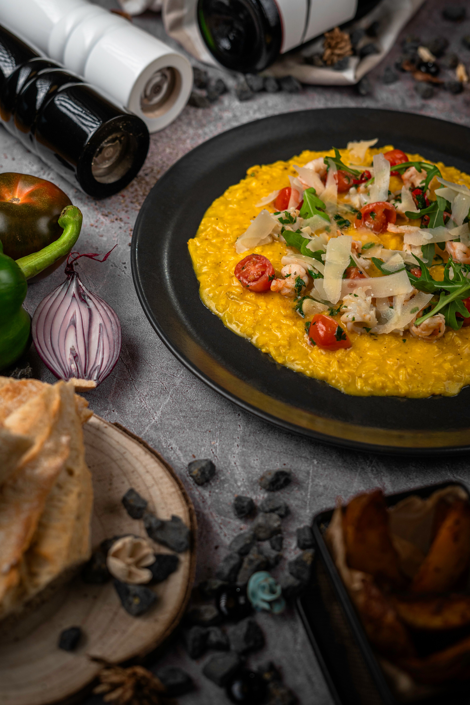
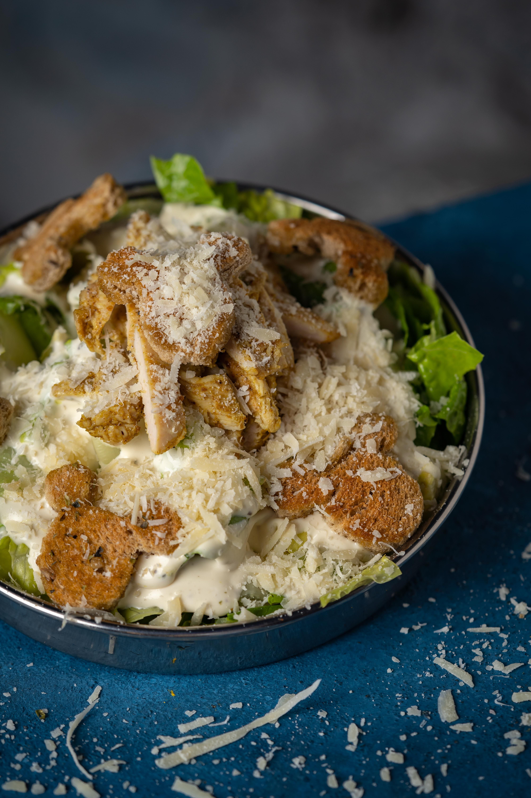

Прості покрокові страви з продуктів, які є в кожному магазині. Обирайте рецепт і готуйте з задоволенням.

Про проєкт
«Смачна Хата» — це кулінарний сайт із добіркою перевірених домашніх рецептів,
які легко повторити на власній кухні. Тут зібрані страви, що передавалися в родинах роками:
перші страви, гарніри, випічка та святкові частування. Кожен рецепт супроводжується
зрозумілим описом кроків, щоб навіть початківець зміг приготувати смачну страву
з першого разу.
Добірка створена для тих, хто любить готувати сам і цінує смак справжньої домашньої їжі:
для молодих господинь, для зайнятих батьків, яким потрібні швидкі та ситні страви, а
також для досвідчених кулінарів, які шукають нові ідеї серед класичних рецептів.
Борщ український
Класичний наваристий борщ на м'ясному бульйоні з буряком, капустою та квасолею.
Подається зі сметаною та часниковими пампушками.
Час приготування — близько двох годин, але результат вартий очікування: густий,
насичений смак, який зігріває в будь-яку пору року.
Сирники зі сметаною
Ніжні сирники з домашнього сиру, обсмажені до золотистої скоринки. Ідеальний
сніданок для всієї родини.
Рецепт готується за 20 хвилин і не вимагає спеціальних навичок — чудовий варіант
для тих, хто тільки починає освоювати кухню.

Золотисті сирники, обсмажені до хрусткої скоринки
Для кого ці рецепти
Незалежно від рівня досвіду, кожен знайде тут щось смачне для своєї родини — прості
покрокові рецепти, поради щодо вибору продуктів та ідеї для сімейних обідів і затишних
вечерь.
Смачна їжа починається не з дорогих продуктів, а з бажання приготувати щось для тих,
кого любиш.
Питання та відповіді
Чи можна заморозити борщ?
Так, борщ добре переносить заморозку. Розлийте його по контейнерах і зберігайте
до трьох місяців — при розморожуванні смак майже не змінюється.
Скільки зберігаються сирники в холодильнику?
Готові сирники варто зʼїсти протягом двох днів, зберігаючи їх у закритому контейнері
в холодильнику. Розігрівати краще на сковороді, а не в мікрохвильовці.
Чим замінити сметану в рецептах?
Сметану можна замінити натуральним йогуртом без цукру — смак стане трохи легшим,
але текстура страви залишиться подібною.